QGISビギナーズマニュアル
本教材は、QGIS入門者向けの実習用教材です。QGISを実際に操作しながら、空間データの表示、シンボルの変更、地図のレイアウト等を学習することができます。
課題形式で利用する場合は、課題ページをご利用ください。GIS初学者は、本教材を進める前にGISの基本概念の教材を確認してください。本教材を使用する際は、利用規約をご確認いただき、これらの条件に同意された場合にのみご利用下さい。
Menu
- QGISとは？
- インストール
- 起動
- ウインドウ
- 各種ボタン
- データの読み込み
- 機能説明
- 属性テーブル
- プロパティ
- XYZタイルの読み込み
- 地図のレイアウト
- 作業ファイルの保存
- プラグイン
- Python入門
- データの保存形式
- 参考ページ等
使用データ
実習をはじめる前に、以下のデータをダウンロードしてください。
スライド教材
本教材は、スライド形式(スライド_QGISビギナーズマニュアル)としても、ご利用いただけます。
QGISとは？
QGISは、無償で利用できるオープンソースのGIS（GNU General Public Licenseで提供）です。Windows,Mac,Linux,Unix, Androidなど様々な環境で動作します。様々なプラグインや、GRASSやPostGISなど他のオープンソースGISと連携して使用することで、多種類の分析が可能です。GISの基本操作に必要な機能を網羅しているだけでなく、Web上に多数のマニュアルがアップロードされているため、GIS学習がしやすいソフトウェアです。
インストール
QGISは、最新版と1年間のバグ修正のサポートがあるLTR版があります。GIS実習オープン教材では、LTR版のQGIS3.4を中心に利用しています。下記に従って、QGISをインストールしてください（LTR版のダウンロードを推奨）。
最新版のインストール
QGISのホームページにアクセスし、ダウンロードするをクリックする。
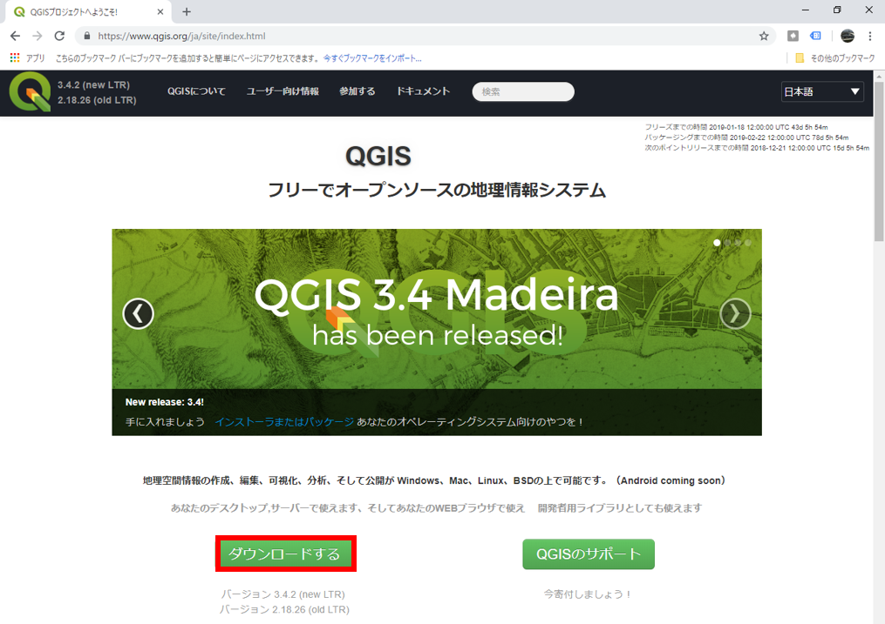
PCの環境にあわせて、32bit版か64bit版を選択するとダウンロードが開始される。

ダウンロードが終了したら、.exeファイルを実行し、QGISをインストールする。
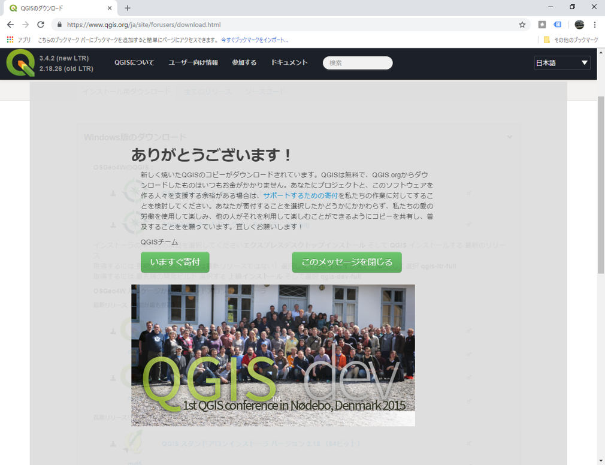
旧版のインストール
本教材は、QGIS2.8を基本に構成しています
QGISの公式ホームページを開き、ダウンロードするをクリックする。全てのリリースのタブに切り替えて、古いバージョンのダウンロードをクリックする。
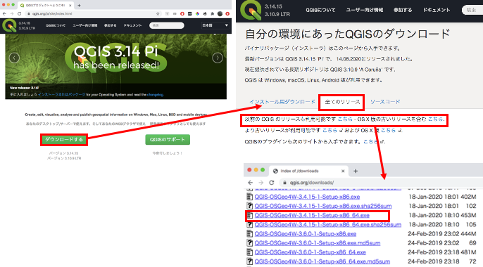
起動
デスクトップのQGISアイコンをダブルクリックする。しばらくするとQGISが起動する。

ウインドウ
QGISを起動すると、下の図のようなウィンドウが表示されます。ウインドウ上のアイコンの配置は自由に変更することができます。アイコンのない箇所（グレーの部分）で右クリックすることにより、別機能のウインドウを呼び出すことができます。アイコンの数は、インストールしているプラグインの数によっても異なります。そのため、インストール直後のQGISと教材の画像が異なっていることを確認してください。 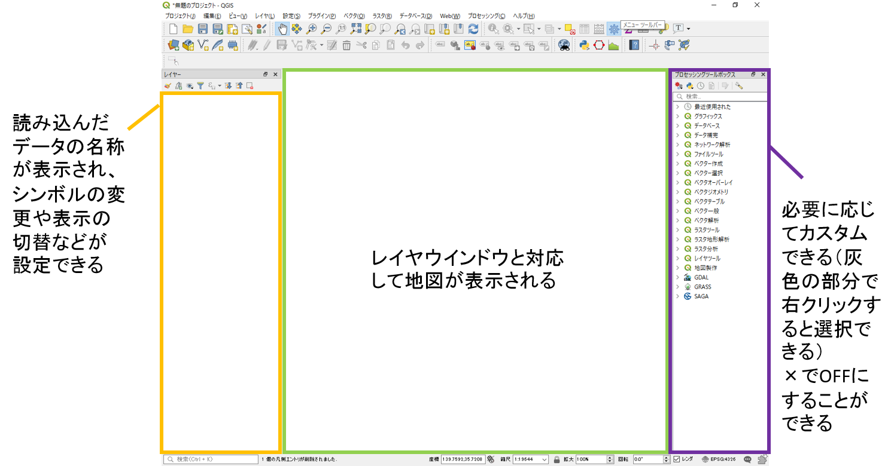
各種ボタン
以下では、QGISで主に使用するボタンについて解説しています。

- QGISファイルを保存
- 名前をつけてQGISファイルを保存
- 地図移動
- 地図の拡大と縮小
- 選択領域にズーム
- 動作の前後移動
- 地物情報の表示
- 選択と選択取り消し
- 長さ、面積計測（手動）
- レイヤ編集
- レイヤの読み込み

データの読み込み
GISでは、位置情報を保持するベクトルデータとラスタデータを用いて、空間分析等を行います。各データの特徴は、GISの基本概念_ベクトルデータとラスタデータを参照してください。以下では、代表的なデータ形式を取り上げ、それらをQGISで読み込む手法について解説します。教材中に記載されている使用データを用意してください（ファイルをダウンロード後に、.zipを解凍してください）。
ベクトルデータ読み込み
以下では、GISで扱う代表的なベクトルデータ形式のシェープファイルを読み込む手法について解説する。シェープファイルの特徴は、GISの基本概念_シェープファイルを参照してください。
データソースマネージャーを開くのアイコンをクリックし、ベクタのタブに切り替える。エンコーディングをUTF-8とし、ソースから、cvs_jgd2011_9.shpを指定する。追加をクリックするとデータが表示される。


上記のように、cvs_jgd2011_9.shpを読み込むと、東京23区内のコンビニが表示される（ポイントデータ）。ベクトルデータには、ポイント、ライン、ポリゴンのデータ形式がある。ラインとポリゴンも同様の手法で読み込むことができる。
ライン
東京周辺の河川(river_9kei.shp)を表示する。

ポリゴン
東京23区のエリア(tokyo_23ku_jgd2011_9.shp)を表示する。

ラスタデータの読み込み
以下では、GISで扱う代表的なラスタデータ形式のGeotiffを読み込む手法について解説する。データソースマネージャーを開くのアイコンをクリックし、ラスタのタブに切り替える。ソースから、tokyo_srtm.tifを指定し追加をクリックする。


テキストデータ読み込み
以下では、GISで扱う代表的なテキストファイルであるCSV形式のデータを読み込む手法について解説する。データソースマネージャーを開くのアイコンをクリックし、デリミティッドテキストのタブに切り替える。ファイル名から、post_office.csvを指定する。X,Yフィールドに対応する緯度経度があれば指定し、緯度経度がなければジオメトリなしにチェックをする(ここでは、ジオメトリ定義＞ジオメトリなしにチェックを入れてください。)。
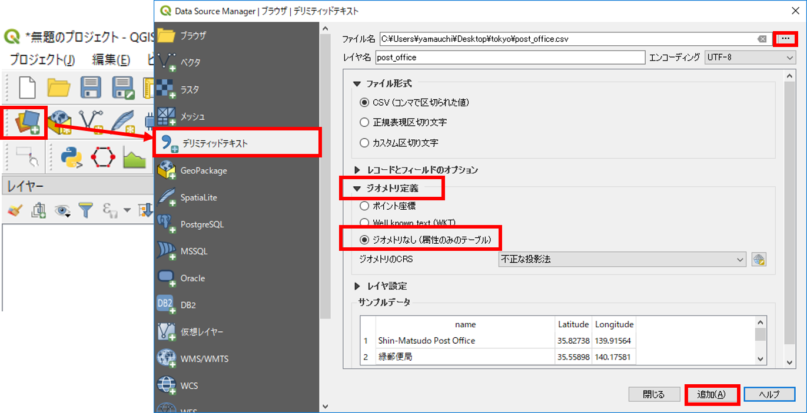
レイヤ構造
GISでは、レイヤ構造に従ってデータの切り替えや重ね合わせを行います。以下では、レイヤの切り替え、重ね合わせ、削除の手法を解説します。
レイヤ表示の切替
各レイヤの横にあるチェックボックスにチェックをいれると、地図表示画面にレイヤが表示される。

レイヤの重ね合わせ
レイヤウィンドウでレイヤを上下にずらすと、地図表示画面が連動して切り替わる。

レイヤの削除
レイヤウィンドウでレイヤの上で右クリックし、レイヤの削除をクリックする。この処理では、レイヤウィンドウ上からレイヤが消えるのみで、データそのものは削除されていない点に注意する。
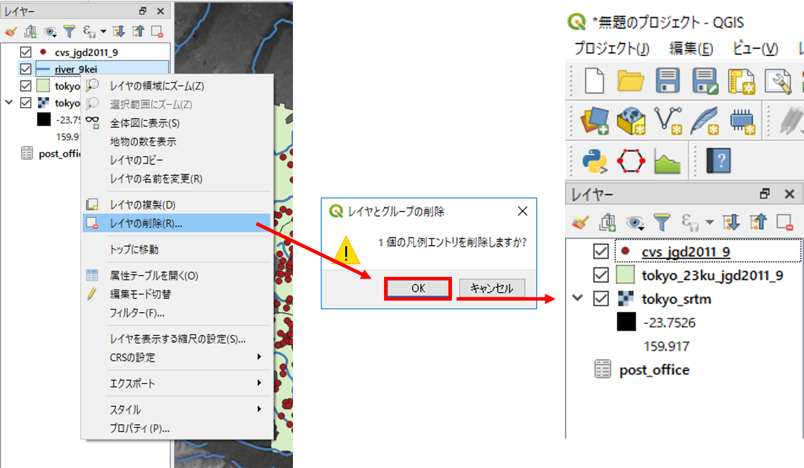
機能説明
QGISには、地図のレイアウト、データの作成、分析など様々な機能があります。以下では、QGISの機能について説明しています。
 プロジェクト：QGIS（.qgs）ファイルの保存や読み込み、地図のレイアウト、エクスポートができる。
プロジェクト：QGIS（.qgs）ファイルの保存や読み込み、地図のレイアウト、エクスポートができる。
編集：ベクタレイヤの編集ができる。編集状態になると、アクティブになる。
 ビュー：地図の移動や拡大、縮小など、地図画面の操作ができる。
ビュー：地図の移動や拡大、縮小など、地図画面の操作ができる。
レイヤ：ベクタやラスタなどのレイヤが追加できる。
ポイント、ライン、ポリゴン新規レイヤの作成もできる。
 設定：オプションから、プロジェクトの設定やスナップオプションが設定できる。
設定：オプションから、プロジェクトの設定やスナップオプションが設定できる。
プラグイン：プラグインの管理とインストールができる。Python入力画面が開ける。
 ベクタ：バッファやクリップなどベクタに関する処理ができる。
ベクタ：バッファやクリップなどベクタに関する処理ができる。
ラスタ：斜面方位図や陰影図の作成などラスタに関する処理ができる。
 データベース：PostGISなどのデータベースへの接続やeVisプラグインによる外部ファイルとの連携が可能。
データベース：PostGISなどのデータベースへの接続やeVisプラグインによる外部ファイルとの連携が可能。
Web：背景地図の設定やweb地図の書き出しができる（プラグインによる）。
 プロッセッシング：他のGISソフトウェアと連携して操作ができる（R,GRASS,SAGAなどがQGIS内で処理できる）。
プロッセッシング：他のGISソフトウェアと連携して操作ができる（R,GRASS,SAGAなどがQGIS内で処理できる）。
ヘルプ：QGISのヘルプが確認できる。
属性テーブル
ベクトルデータは、複数の属性情報を保持することができます。以下では、QGISで属性情報を参照する手法について、解説しています。
以下では、cvs_jgd2011_9.shpのみ利用します。不要なレイヤを削除してください。
データを読み込み、レイヤウィンドウのレイヤの上で右クリックすると、属性テーブルを開くことができる。 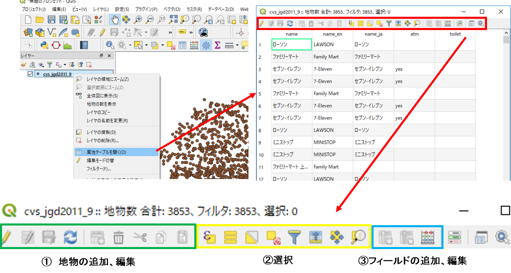
属性テーブルで選択したものは、地図上で黄色で表示される。選択アイコンで地図上のレイヤを選択した場合は、その属性テーブルが選択される。 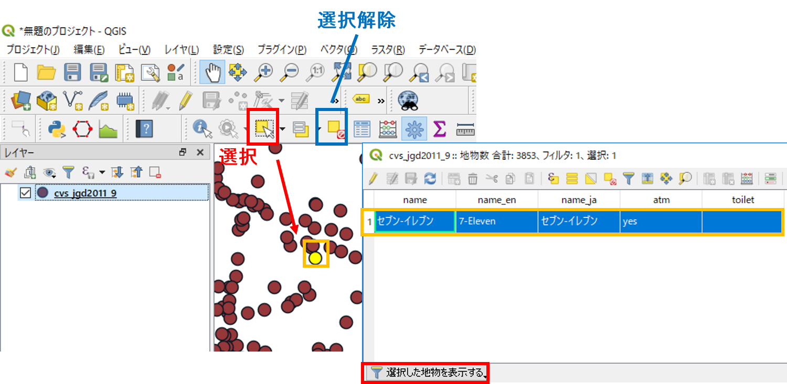
プロパティ
QGISでは、レイヤごとにレイヤのプロパティから、データの表示情報やスタイルの変更ができます。ポイントでは形や大きさ、ラインでは線の形や太さ、ポリゴンでは塗りつぶし色等を変更することができます。属性情報に応じて、スタイルを分けることもできます。これは、レイヤの表示が変化するのみの処理で、データそのものの形状は変更されません。
以下では、レイヤのプロパティについて解説し、ポイントデータのスタイルの変更を行います。
レイヤウインドウからプロパティを表示したいレイヤを選択し、右クリックからプロパティをクリックする。 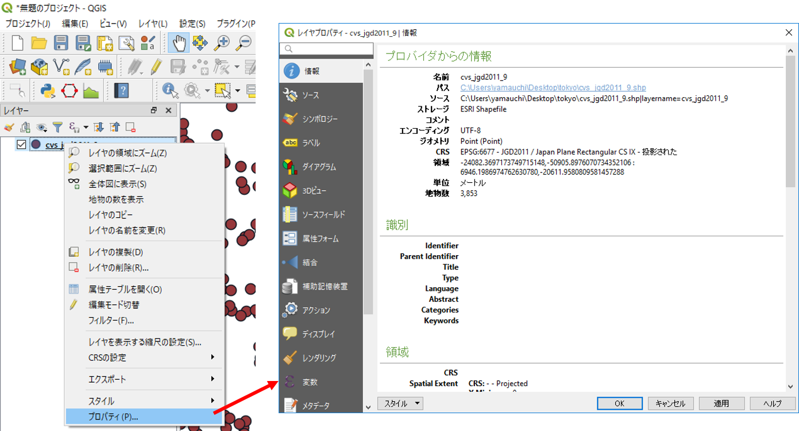
ソース
座標系を確認したり、文字コード、表示名の変更がきます。

シンボロジー
データのスタイルを整えることができる機能です。データの値に応じて配色やスタイルを変えることができます。分類方法は「単一シンボル」、「分類された」、「段階に分けられた」等があります。
ここでは、ポイントデータの大きさと色を変更します。単一シンボルを選択し、色と大きさを指定する。指定できた状態でOKをクリックすると変更が適用される。

以下のように、形を変更することもできる。

属性テーブルの値によって、大きさと色を変更するには、分類されたを選択し、分類したいフィールドを選択する。
ここではコンビニごとに色を変更するため、カラム＞name_enとする。この状態で、分類をクリックすると値による色分けができる。各色は、シンボルをクリックすることで調整でき、ラベルも変更することができる。

最後に、不要な分類を選択し削除する。OKをクリックすると変更が適用される。

ラベル
データを表示する際に、属性情報に基づいてラベルを作成する機能です。以下では、属性値を用いて、ラベルを表示する手法について解説しています。
ラベルを選択し、単一のラベルを指定し、分類したいフィールドを指定する。ここでは、name_enを指定する。OKをクリックすると変更が適用され、地図上にラベルが表示される。

XYZタイルの読み込み
以下では、QGISにXYZタイル形式の背景地図（地理院タイル等）を読み込む手法について解説します。
アイコンが並ぶ箇所（グレーの個所）で右クリックし、パネル＞ブラウザパネルをクリックする。ブラウザパネル＞XYZ Tilesを探し、右クリックし新しい接続をクリックする。

国土地理院の地理院タイルのページから、空中写真・衛星画像のURLをコピーし、以下のように名前、URL、ズームレベルを設定する。OKをクリックすると、ブラウザパネルにタイルが追加される。追加されたタイルをクリックすると、レイヤウィンドウにレイヤとして追加でき、地図も表示される。

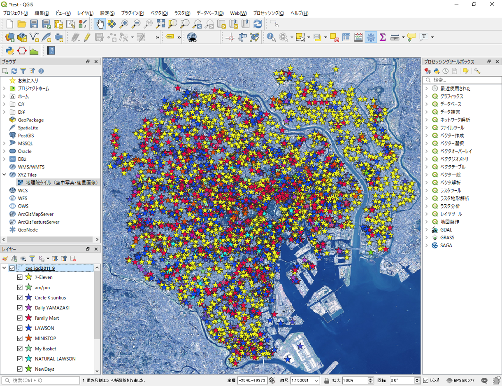
※ 地理院タイルを利用する場合は、利用規約に従ってください。
XYZタイルの一括読み込み
事前にタイル情報を記述したxmlファイルを用いて、接続をロードから、複数のタイルをを一括で読み込むことが可能です。ここでは、使用データのファイル内にあるgisoer_tiles.xmlを利用します。
gisoer_tilesは、株式会社MIERUNEのGitHub(MIERUNE/mierune-qgis)を参考に作成したものです。
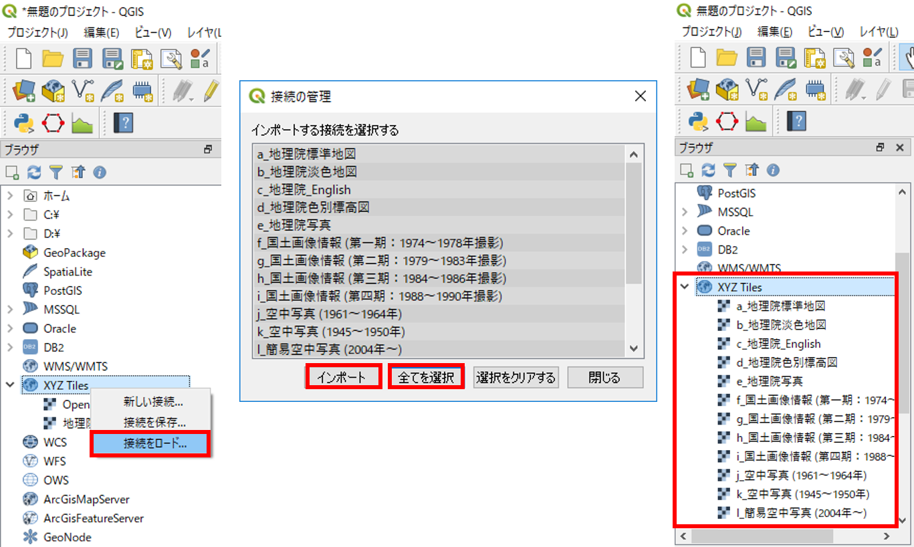
地図のレイアウト
以下では、スタイリングしたデータと地理院タイルを用いて、地図をレイアウトして画像として出力する手法について解説します。この実習をはじめる前に、地図画面を任意の地域に拡大してください（以下では、東京大学本郷キャンパス周辺を表示しています）。
プロジェクト＞新規プリントレイアウトを選択し、タイトル（地図名など任意）を入力する。データが重ならない場合は、オンザフライCRS投影がうまくいっていない可能性があるので、QGISを再起動する。その後、サンプルデータ、地理院タイルの順で読み込む。

プリントコンポーザ
プリントレイアウトでは、以下の機能を利用して地図を作成することができる。

- アイテムの選択と移動
- 地図の移動
- 地図の追加
- 画像の追加
- テキストの追加
- 凡例の追加
- 縮尺バーの追加
- 地図の出力
※アイテムの削除は編集から行う。
レイアウト
以下のような地図を作成するため、地図、縮尺バー、凡例、タイトル等を追加する。
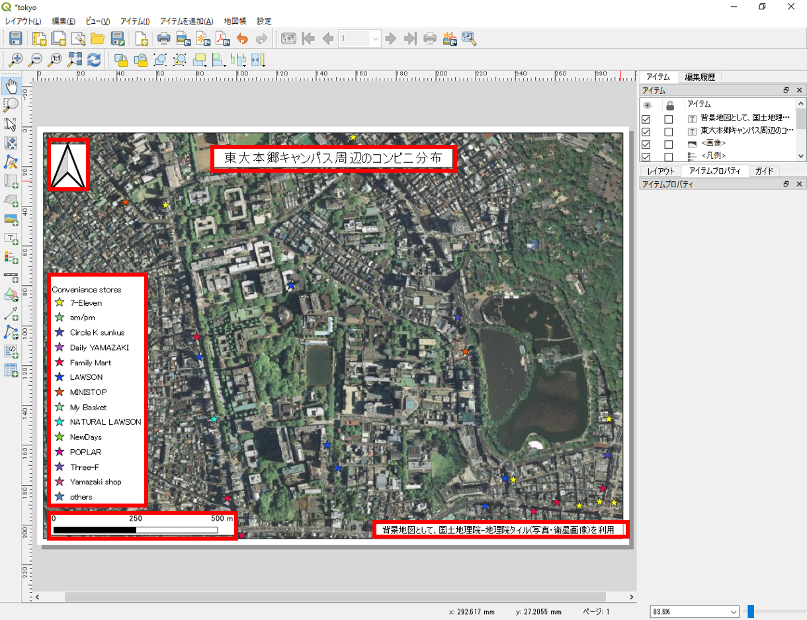
地図の追加
地図の追加ボタンをクリックし、地図のレイアウト画面上でドラッグして大きさを指定して、地図を追加する。※追加される地図は、QGISで表示している範囲となる。

縮尺バーの追加
以下のように、矢印の位置をクリックし、縮尺バーを追加する（ドラッグでの追加も可能）。縮尺バーを選択した状態で、アイテムプロパティのタブに切り替え、線分列の大きさの値等を変更する。


凡例の追加
縮尺と同様に凡例を追加する。凡例を選択し、アイテムプロパティで調整する。自動アップデートのチェックをはずすと凡例が編集できる。名称の変更、凡例項目の追加と削除ができる。

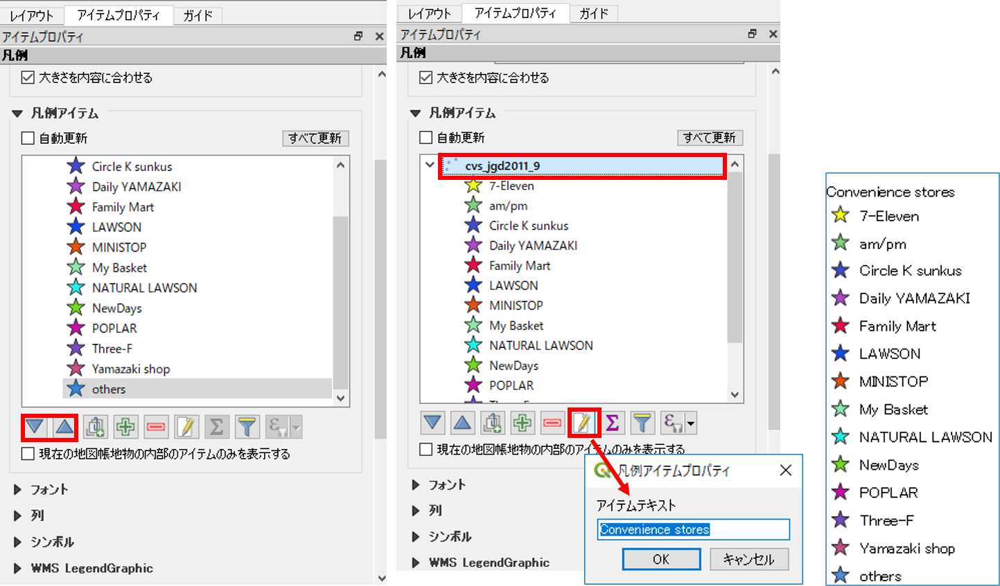
方位記号の追加
画像の追加から方位記号を追加する。アイテムプロパティ＞検索ディレクトリをクリックし、方位記号を選択する。デフォルトの状態では、図の赤枠部分をクリックしないと検索ディレクトリが開かないため、注意する。以下のように、アイテムプロパティで、画像の調節を行う。

テキストの追加
テキストの追加からテキストを追加する。メインプロパティに入力したいテキストを記述する。

以下のように、フォントのサイズや配置等を調節する。

同様の手法で、任意の個所に、背景地図やデータのライセンス等必要な情報をテキストで追加する。
画像の出力
地図のレイアウトを整えた後、画像としてエクスポートする。レイアウト＞画像としてエクスポートを選択する。

エクスポートした画像ファイルをダブルクリックすると、以下のような地図が表示できる。画像を出力した後、プリントレイアウトを閉じる。

QGISのビュー上に凡例と方位記号を表示する
ビュー>地図装飾を選択する。地図装飾からスケールバー、方位記号を追加する。それぞれの表示にチェックを入れ、形式や配置を調整しOKをクリックする。

以下のように、QGISのビュー上に縮尺と方位記号が表示される。

作業ファイルの保存
QGISには、作業ファイルを保存する機能がある。これにより、一度QGISを閉じた後でも、前回の状態から作業を再開することができる。
プロジェクト＞名前を付けて保存をクリックし、任意の名称で出力する。次回開くときは、出力した.qgzファイルをダブルクリックするとQGISが立ち上がる。

プラグイン
QGISでは、オフィシャルプラグインリポジトリ等から、様々な拡張機能をプラグインとしてインストールできます。プラグインをインストールすることにより、様々な処理が可能になります。プラグインの実際の使用法は、他の教材で解説しているため、ここではインストール方法のみ解説しています。
プラグイン＞プラグインの管理とインストールを選択する。

検索から、インストールしたいプラグインを検索する。例として、以下のような便利なプラグインがある。

Python入門
QGISでは、Pythonでコードを書いて処理したり、プラグインを自作することができます。以下では、Pythonコンソールを用いてコードによる処理について紹介しています。
プラグインから、Pythonコンソールを開く。

Pythonでは、値やオブジェクトを変数へ代入することができる。以下では、tokyo（変数）に‘test’（文字列）を代入した。そのため、testと入力したら’tokyo’が返される。変数には数値型も代入でき、tokyo=23を代入し、tokyo+1を実行すると24が返される。文字型との違いは、 ’’があるかないかで区別している。この他にリストや辞書が変数に代入できる。 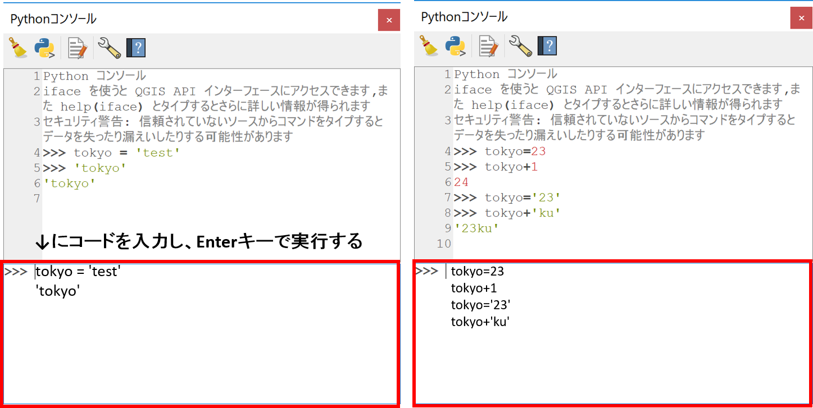
QGISでは、独自のPython関数が用意されており、それを読み込むことができる。拡張モジュールも多くあり、様々な関数による処理が可能である。詳しくは、QGIS API Documentationを参照。
例えば、以下のように記述することで、選択したポイントデータの個数を集計できる。

#アクティブレイヤ（レイヤウインドウで選択した）をtokyoに代入する
tokyo = iface.activeLayer()
レイヤの個数を取得する（tokyo）
tokyo.featureCount()
Python関数を用いることで、複数のレイヤを一括で処理する等ができます。これらの手法については、Python初級で簡単に解説しています。
データの保存形式
GISでは、Shapefile（シェープファイル）形式のベクトルデータを用いることが多いです。しかし、使用するソフトウェアやアプリケーションによっては、別の形式のファイルを使用します。ここでは、QGISによるデータのエクスポートについて解説します。
レイヤの上で右クリックし名前をつけて保存をクリックする。QGISでは、シェープファイル以外にも、KMLやCSV等、様々な形式のデータを出力することができる。

KMLは、Google Earthで利用できる形式である。Cesiumなどを利用することで、Web上でも表現しやすいデータである。 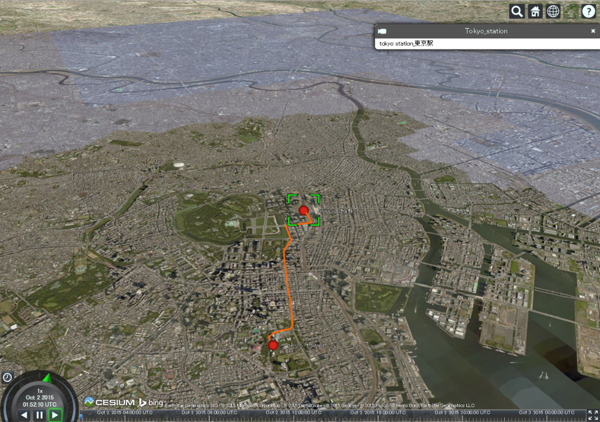 上の図は、東京駅から東京タワーまでの道のりを表示したもの。
CSVは、カンマで区切られたデータ形式である。座標値をもっていればCartoなどで簡単にWeb GISとして表現できる。
 上の図は、裾野市オープンデータ 広域避難地・市指定避難所データを加工したものを利用し作成したもの
上の図は、裾野市オープンデータ 広域避難地・市指定避難所データを加工したものを利用し作成したもの
参考ページ等
この教材の課題ページ_QGISビギナーズマニュアルへ進む
ライセンスに関する注意事項
本教材で利用しているキャプチャ画像の出典やクレジットについては、その他のライセンスについてよりご確認ください。
教材の利用に関するアンケート
本プロジェクトでは、教材の改良を目的とした任意アンケートを実施しています。ご協力いただける方は、アンケートにお進みください。ご協力のほどよろしくお願いいたします。※ 本アンケートの成果は、教材の改良のほか、学会での発表等の研究目的でも利用します。また、本アンケートでは、個人が特定できるような質問は設けておりません。